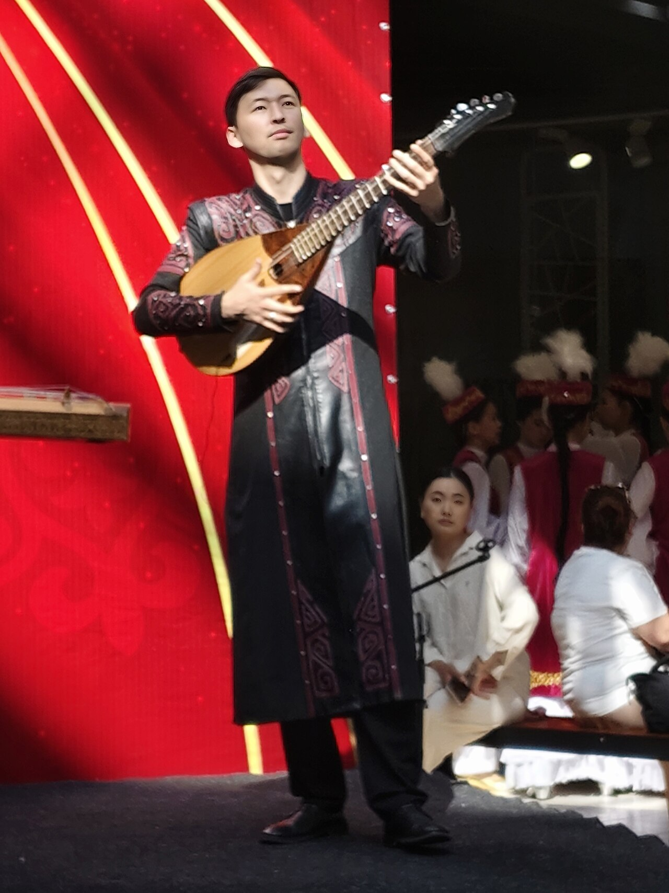

Музыка · 49-бөлім · Халық әндері, айтыс Music · Section 49 · Folk Songs & Aitys Музыка · Раздел 49 · Народные песни, айтыс, жырау
🎤 Халық әндері, айтыс, жырау
🎤 Folk Songs, Aitys and Zhyrau
🎤 Народные песни, айтыс, жырау
Қазақ музыкасы — ауызша дәстүр: ән мен өлең домбыра сүйемелдеуімен суырып салынды. Kazakh music is an oral tradition: songs and poetry were improvised to the dombra. Казахская музыка — устная традиция: песни и стихи импровизировались под домбру.
🗣 Ауызша дәстүр 🗣 The Oral Tradition 🗣 Устная традиция
Қазақ халқының әні мен өлеңі ауыздан ауызға берілді — ұстаздан шәкіртке, атадан балаға. Kazakh songs and poetry passed from mouth to mouth — from teacher to pupil, from father to son. Песни и поэзия казахов передавались из уст в уста — от учителя к ученику, от отца к сыну.
Көп жағдайда мәтін мен әуен жазылмай, орындау кезінде суырып салынды (импровизация). Often the words and melody were not written down but improvised on the spot during the performance. Часто текст и мелодия не записывались, а импровизировались прямо во время исполнения.
Ән мен жыр көбіне домбыра сүйемелдеуімен айтылды — домбыра әншінің серігі болды. Songs and tales were mostly sung to the dombra — the dombra was the singer's companion. Песни и сказания чаще всего пелись под домбру — домбра была спутницей певца.
💡 Импровизация — суырып салу өнері. Ақын дайын мәтінді емес, дәл сол сәтте туған сөзді айтады. 💡 Improvisation is the art of composing on the spot. The poet sings not a ready text but words born in that very moment. 💡 Импровизация — искусство сочинять на ходу. Акын поёт не готовый текст, а слова, рождённые в тот самый миг.

🎭 Ақын, айтыс, жырау, эпос 🎭 Akyn, Aitys, Zhyrau, Epic 🎭 Акын, айтыс, жырау, эпос
Ақын Akyn Акын
Халық ақыны — суырып салма импровизатор: домбыра сүйемелдеуімен өлеңді жол-жөнекей шығарып, әнге қосады. A folk poet is an improviser: to the dombra he composes verse on the move and sings it at once. Народный поэт — импровизатор: на ходу сочиняет и поёт стихи под домбру.
Айтыс Aitys Айтыс
Екі ақынның ән-жарысы: суырып салма өлеңмен айтылатын ақындық сайыс-диалог. Тапқыр да өткір ақын жеңеді. Бүгін де тірі дәстүр. A song contest of two akyns: an improvised poetic duel-dialogue. The quicker, wittier poet wins. A living tradition today. Песенное состязание двух акынов: импровизированный поэтический поединок-диалог. Побеждает более находчивый и остроумный. Живая традиция и сегодня.
Жырау Zhyrau Жырау
Жыршы әрі дана: эпосты (жыр) — үлкен батырлық дастандарды орындады, халыққа да, ханға да ақыл-кеңес, насихат айтты. A bard and a sage: he performed the epic (zhyr) — great heroic tales, and gave counsel to the people and to the khans. Сказитель и мудрец: исполнял эпос (жыр) — большие героические сказания, давал наставления народу и ханам.
Эпос Epic Эпос
Батырлық дастандар: «Қобыланды батыр», «Алпамыс», «Қамбар батыр» — ерлік пен елдікті жырлайтын ұлы жырлар. Heroic poems: "Koblandy-batyr", "Alpamys", "Kambar-batyr" — great tales of courage and nationhood. Героические поэмы: «Кобланды-батыр», «Алпамыс», «Камбар-батыр» — великие сказания о доблести и единстве народа.
🎶 Халық әндері және сал-серілер 🎶 Folk Songs and the Sal-Seri Singers 🎶 Народные песни и певцы сал-серэ
Халық әндері әртүрлі болды: лирикалық (сезім, махаббат туралы), салт-дәстүр әндері (той, қоштасу) және еңбек әндері. Folk songs were varied: lyrical (about feelings and love), ritual songs (wedding, farewell) and work songs. Народные песни были разными: лирические (о чувствах и любви), обрядовые (свадебные, прощальные) и трудовые.
ЛирикалықLyricalЛирические
Салт-дәстүрRitualОбрядовые
ЕңбекWorkТрудовые
Ұлы халық әнші-композиторлары (сал-серілер): The great folk singer-composers (sal-seri): Великие народные певцы-композиторы (сал-серэ):

🎧 Домбыра сүйемелдеуімен қарапайым халық ән сазын тыңдаңыз. 🎧 Listen to a simple, singable folk-song motif over a dombra accompaniment. 🎧 Послушайте простой напевный мотив народной песни под аккомпанемент домбры.